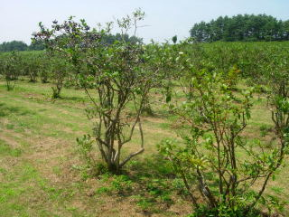
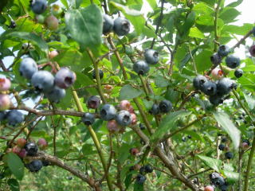
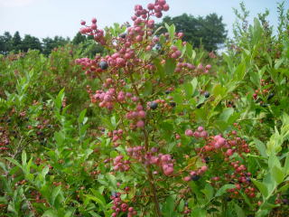

地頭農園でブルーベリー狩り
2010/8/22
炎天下にブルーベリー狩りに行きました。
木陰がないので、暑かったです。

農園で貰ったパンフレットによると、西日本最大規模のブルーベリー園らしいです。以前にも来たことあったんですが、その時よりだいぶ広くなってました。

広い園内を歩きまわって、色んな種類のブルーベリーの食べ比べが出来て楽しかったです。

まだ赤い実が沢山ありましたので、シーズンが続くと思います。
鳥取県西伯郡大山町赤松572-328
2010/8/22
炎天下にブルーベリー狩りに行きました。
木陰がないので、暑かったです。

農園で貰ったパンフレットによると、西日本最大規模のブルーベリー園らしいです。以前にも来たことあったんですが、その時よりだいぶ広くなってました。

広い園内を歩きまわって、色んな種類のブルーベリーの食べ比べが出来て楽しかったです。

まだ赤い実が沢山ありましたので、シーズンが続くと思います。